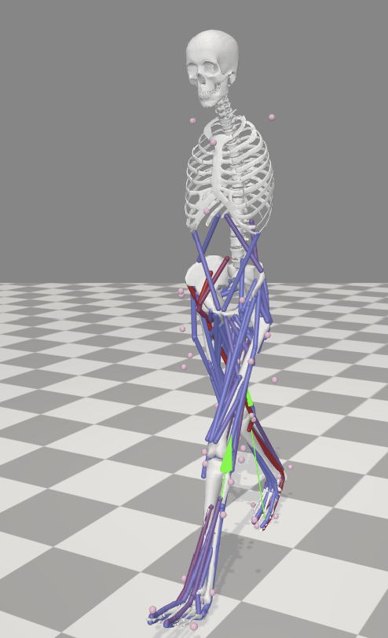
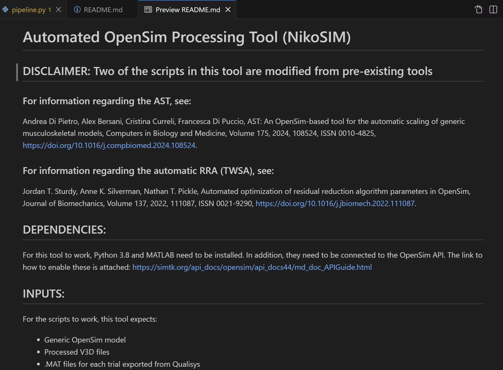
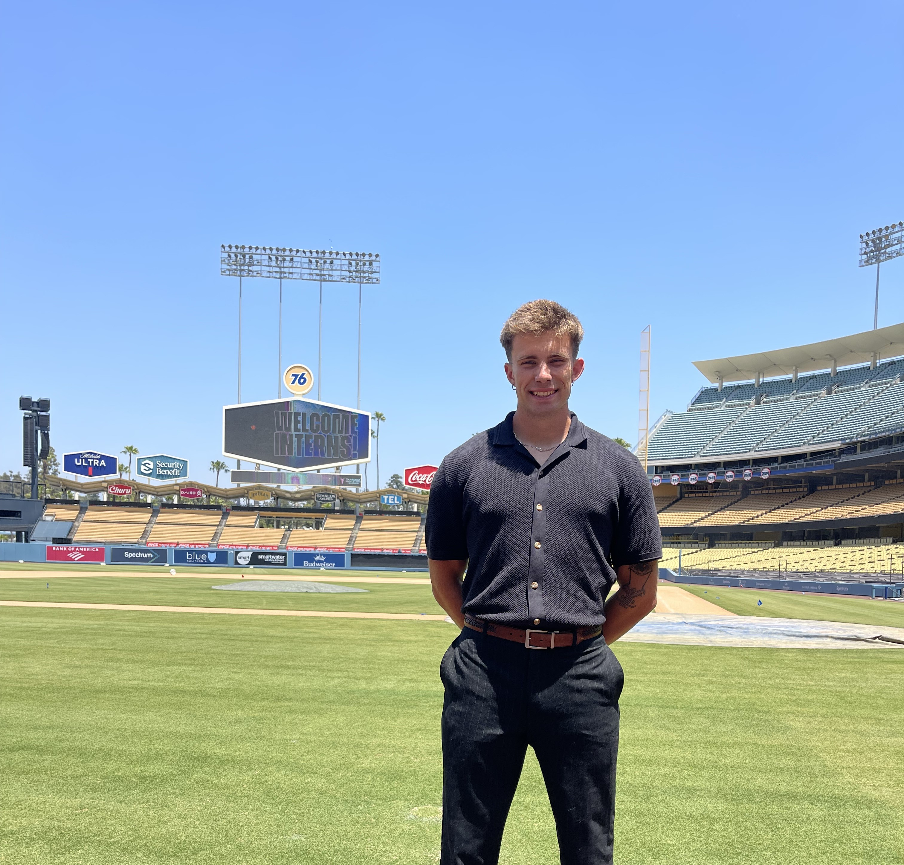
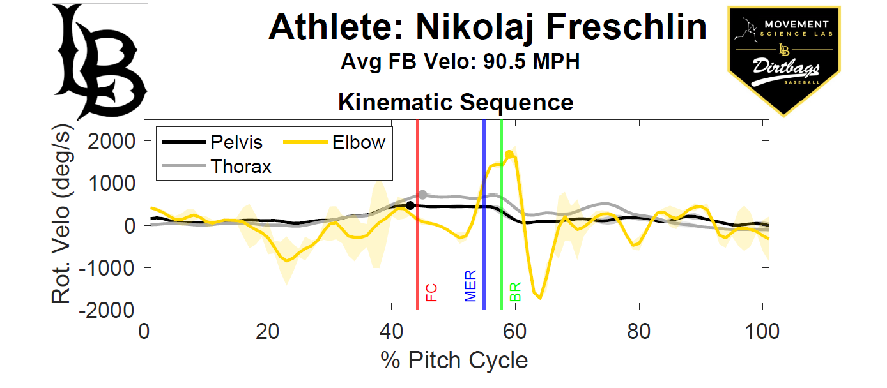

Welcome to my Website!
Nikolaj Freschlin, M.S.
I am currently a PhD student in the Neuromuscular Biomechanics Lab (NMBL) at the University of Massachusetts, Amherst under Dr. Sarah Roelker.
About Me
My research interests are sports biomechanics, neuromusculoskeletal modelling/simulations, biomechanical data science, machine learning, and human performance.

I previously worked with the Los Angeles Dodgers as a Performance Science Intern researching pitching and hitting biomechanics!

I work primarily in OpenSim, Visual3D, and Python/MATLAB to produce simulations pictured above.
Recent Highlights

High-Functioning Older Adults Use Greater Muscle Contributions to Whole-Body Angular Momentum than Younger Adults to Regulate Balance
A recent abstract of mine was accepted as an oral presentation at the World Congress of Biomechanics in Vancouver this summer.

Completely Automated OpenSim Processing Pipeline
As part of my PhD work researching neuromuscular changes in Young vs. Older adults' gait, I created an automated processing tool that completely scales, tracks, reduces residuals, and produces an OpenSim MoCo simulation.

Los Angeles Dodgers Performance Science Internship
During the summer of 2025, I was fortunate enough to work for the Los Angeles Dodgers. Here I was able to create machine learning models to research specific biomechanical aspects of players' pitching deliveries and create individual reports highlighting player-specific areas of improvement using 100,000's of trials for 100's of pitchers.

CSULB Pitching Staff Biomechanical Analysis Project
During my Master's, I collected, analyzed, and created comprehensive biomehcanical reports using data from Long Beach State's pitching staff.